- 01 二进制：不了解计算机的源头，你学什么编程.md
- 02 余数：原来取余操作本身就是个哈希函数.md
- 03 迭代法：不用编程语言的自带函数，你会如何计算平方根？.md
- 04 数学归纳法：如何用数学归纳提升代码的运行效率？.md
- 05 递归（上）：泛化数学归纳，如何将复杂问题简单化？.md
- 06 递归（下）：分而治之，从归并排序到MapReduce.md
- 07 排列：如何让计算机学会“田忌赛马”？.md
- 08 组合：如何让计算机安排世界杯的赛程？.md
- 09 动态规划（上）：如何实现基于编辑距离的查询推荐？.md
- 10 动态规划（下）：如何求得状态转移方程并进行编程实现？.md
- 11 树的深度优先搜索（上）：如何才能高效率地查字典？.md
- 12 树的深度优先搜索（下）：如何才能高效率地查字典？.md
- 13 树的广度优先搜索（上）：人际关系的六度理论是真的吗？.md
- 14 树的广度优先搜索（下）：为什么双向广度优先搜索的效率更高？.md
- 15 从树到图：如何让计算机学会看地图？.md
- 16 时间和空间复杂度（上）：优化性能是否只是“纸上谈兵”？.md
- 17 时间和空间复杂度（下）：如何使用六个法则进行复杂度分析？.md
- 18 总结课：数据结构、编程语句和基础算法体现了哪些数学思想？.md
- 19 概率和统计：编程为什么需要概率和统计？.md
- 20 概率基础（上）：一篇文章帮你理解随机变量、概率分布和期望值.md
- 21 概率基础（下）：联合概率、条件概率和贝叶斯法则，这些概率公式究竟能做什么？.md
- 22 朴素贝叶斯：如何让计算机学会自动分类？.md
- 23 文本分类：如何区分特定类型的新闻？.md
- 24 语言模型：如何使用链式法则和马尔科夫假设简化概率模型？.md
- 25 马尔科夫模型：从PageRank到语音识别，背后是什么模型在支撑？.md
- 26 信息熵：如何通过几个问题，测出你对应的武侠人物？.md
- 27 决策树：信息增益、增益比率和基尼指数的运用.md
- 28 熵、信息增益和卡方：如何寻找关键特征？.md
- 29 归一化和标准化：各种特征如何综合才是最合理的？.md
- 30 统计意义（上）：如何通过显著性检验，判断你的A_B测试结果是不是巧合？.md
- 31 统计意义（下）：如何通过显著性检验，判断你的A_B测试结果是不是巧合？.md
- 32 概率统计篇答疑和总结：为什么会有欠拟合和过拟合？.md
- 33 线性代数：线性代数到底都讲了些什么？.md
- 34 向量空间模型：如何让计算机理解现实事物之间的关系？.md
- 35 文本检索：如何让计算机处理自然语言？.md
- 36 文本聚类：如何过滤冗余的新闻？.md
- 37 矩阵（上）：如何使用矩阵操作进行PageRank计算？.md
- 38 矩阵（下）：如何使用矩阵操作进行协同过滤推荐？.md
- 39 线性回归（上）：如何使用高斯消元求解线性方程组？.md
- 40 线性回归（中）：如何使用最小二乘法进行直线拟合？.md
- 41 线性回归（下）：如何使用最小二乘法进行效果验证？.md
- 42 PCA主成分分析（上）：如何利用协方差矩阵来降维？.md
- 43 PCA主成分分析（下）：为什么要计算协方差矩阵的特征值和特征向量？.md
- 44 奇异值分解：如何挖掘潜在的语义关系？.md
- 45 线性代数篇答疑和总结：矩阵乘法的几何意义是什么？.md
- 46 缓存系统：如何通过哈希表和队列实现高效访问？.md
- 47 搜索引擎（上）：如何通过倒排索引和向量空间模型，打造一个简单的搜索引擎？.md
- 48 搜索引擎（下）：如何通过查询的分类，让电商平台的搜索结果更相关？.md
- 49 推荐系统（上）：如何实现基于相似度的协同过滤？.md
- 50 推荐系统（下）：如何通过SVD分析用户和物品的矩阵？.md
- 51 综合应用篇答疑和总结：如何进行个性化用户画像的设计？.md
- 导读：程序员应该怎么学数学？.md
- 开篇词 作为程序员，为什么你应该学好数学？.md
- 数学专栏课外加餐（一） 我们为什么需要反码和补码？.md
- 数学专栏课外加餐（三）：程序员需要读哪些数学书？.md
- 数学专栏课外加餐（二） 位操作的三个应用实例.md
- 结束语 从数学到编程，本身就是一个很长的链条.md
39 线性回归（上）：如何使用高斯消元求解线性方程组？
你好，我是黄申。
之前我使用Boston Housing的数据，阐述了如何使用多元线性回归。可是，计算机系统究竟是如何根据观测到的数据，来拟合线性回归模型呢？这两节，我就从最简单的线性方程组出发，来说说如何求解线性回归的问题。
在第29讲中，我讲过机器学习中两类很重要的方法：回归分析以及线性回归。回归分析属于监督式学习算法，主要研究一个或多个随机变量\(y\_1\)，\(y\_2\)，…，\(y\_i\)与另一些变量\(x\_{1}\)，\(x\_{2}\)，…，\(x\_{k}\)之间的关系。其中，我们将\(y\_{1}，y\_{2}、…，y\_{i}\)称为因变量，\(x\_1，x\_2，…，x\_k\)称为自变量。按照不同的维度，我们可以把回归分为三种。
按照自变量数量，当自变量\(x\)的个数大于1时就是多元回归。
按照因变量数量，当因变量\(y\)个数大于1时就是多重回归。
按照模型种类，如果因变量和自变量为线性关系时，就是线性回归模型；如果因变量和自变量为非线性关系时，就是非线性回归分析模型。
高斯消元法
对于回归分析来说，最简单的情形是只有一个自变量和一个因变量，且它们大体上是有线性关系的，这就是一元线性回归。对应的模型很简单，就是\(Y=a+bX+ε\)。这里的\(X\)是自变量，\(Y\)是因变量，\(a\)是截距，b是自变量的系数。前面这些你估计都很熟悉，最后还有个\(ε\)，这表示随机误差，只不过我们通常假定随机误差的均值为\(0\)。进一步来说，如果我们暂时不考虑a和ε，把它扩展为多元的形式，那么就可以得到类似下面这种形式的方程：
\(b\_1·x\_1+b\_2·x\_2+…+b\_{n-1}·x\_{n-1} +b\_n·x\_n=y\)
假设我们有多个这样的方程，就能构成线性方程组，我这里列出一个例子。
\(2x\_1+x\_2+x\_3=0\)- \(4x\_1+2x\_2+x\_3=56\)- \(2x\_1-x\_2+4x\_3=4\)
对于上面这个方程组，如果存在至少一组\(x\_1、x\_2\)和\(x\_3\)使得三个方程都成立，那么就叫方程有解；如果没有，那么我们就说方程无解。如果方程有解，那么解可能是唯一，也可能是多个。我们通常关心的是，方程组是不是有解，以及\(x\_1\)一直到\(x\_n\)分别是多少。
为了实现这个目的，人们想了很多方法来求解方程组，这些方法看起来多种多样，其实主要就是两大类，直接法和迭代法。
直接法就是通过有限次的算术运算，计算精确解。而迭代法，我们在第3讲就提到过，它是一种不断用变量的旧值递推新值的过程。我们可以用迭代法不断地逼近方程的精确解。
这里，我就从上面这个方程组的例子出发，阐述最常见的高斯消元法，以及如何使用矩阵操作来实现它。
高斯消元法主要分为两步，消元（Forward Elimination）和回代（Back Substitution）。所谓消元，就是要减少某些方程中元的数量。如果某个方程中的元只剩一个\(x\_m\)了，那么这个自变量\(x\_m\)的解就能知道了。所谓的回代，就是把已知的解\(x\_m\)代入到方程式中，求出其他未知的解。
我们先从消元开始，来看这个方程组。
\(2x\_1+x\_2+x\_3=0\)- \(4x\_1+2x\_2+x\_3=56\)- \(2x\_1-x\_2+4x\_3=4\)
首先保持第一个方程不变，然后消除第二个和第三个方程中的\(x\_1\)。对于第二个方程，方法是让第二个方程式减去第一个方程式的两倍，方程的左侧为：
\((4x\_1+2x\_2+x\_3)-2(2x\_1+x\_2+x\_3)=-x\_3\)
方程的右侧变为：
\(56-2·0=56\)
所以第二个方程变为：
\(-x\_3=56\)
这样三个方程式就变为：
\(2x\_1+x\_2+x\_3=0\)- \(-x\_3=56\)- \(2x\_1-x\_2+4x\_3=4\)
对于第三个方程同样如此，我们需要去掉其中的\(x\_1\)。方法是让第三个方程减去第一个方程，之后三个方程式变为：
\(2x\_1+x\_2+x\_3=0\)- \(-x\_3=56\)- \(-2x\_2+3x\_3=4\)
至此，我们使用第一个方程式作为参照，消除了第二个和第三个方程式中的\(x\_1\)，我们称这里的第一个方程式为“主元行”。
接下来，我们要把第二个方程式作为“主元行”，来消除第三个方程中的\(x\_2\)。你应该能发现，第二个方程中的\(x\_2\)已经没有了，失去了参照，这个时候我们需要把第二个方程和第三个方程互换，变为：
\(2x\_1+x\_2+x\_3=0\)- \(-2x\_2+3x\_3=4\)- \(-x\_3=56\)
到了这个时候，由于第三个方程已经没有\(x\_2\)了，所以无需再消元。如果还有\(x\_2\)，那么就需要参照第二个方程式来消除第三个方程中的\(x\_2\)。
观察一下现在的方程组，第一个方程有3个自变量，第二个方程有2个自变量，第三个方程只有1个自变量。这个时候，我们就可以从第三个方程开始，开始回代的过程了。通过第三个方程，显然我们可以得到\(x\_3=-56\)，然后把这个值代入第二个方程，就可以得到\(x\_2 = -86\)。最后把\(x\_2\)和\(x\_3\)的值代入第一个方程式，我们可以得到\(x\_1=71\)。
使用矩阵实现高斯消元法
如果方程和元的数量很小，那么高斯消元法并不难理解。可是如果方程和元的数量很多，整个过程就变得比较繁琐了。实际上，我们可以把高斯消元法转为矩阵的操作，便于自己的理解和记忆。
为了进行矩阵操作，首先我们要把方程中的系数\(b\_i\)转成矩阵，我们把这个矩阵记作\(B\)。对于上面的方程组示例，系数矩阵为：
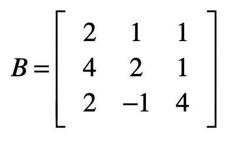
那么，最终我们通过消元，把系数矩阵B变为：
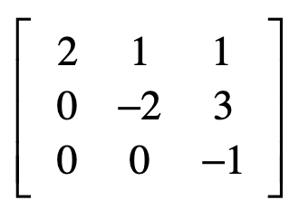
从此可以看出，消元的过程就是把原始的系数矩阵变为上三角矩阵。这里的上三角矩阵表示，矩阵中只有主对角线以及主对角线以上的三角部分里有数字。我们用\(U\)表示上三角矩阵。
而回代呢，我们最终得到的结果是：
\(x\_1=71\)- \(x\_2=-86\)- \(x\_3=-56\)
我们可以把这几个结果看作：
\(1·x\_1+0·x\_2+0·x\_3=71\)- \(0·x\_1+1·x\_2+0·x\_3=-86\)- \(0·x\_1+0·x\_2+1·x\_3=-56\)
再把系数写成矩阵的形式，就是：
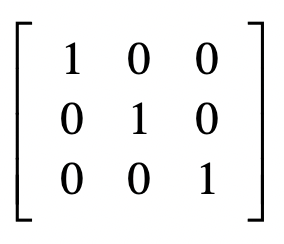
发现没？这其实就是单位矩阵。所以说，回代的过程是把上三角矩阵变为单位矩阵的过程。
为了便于后面的回代计算，我们也可以把方程式等号右边的值加入到系数矩阵，我们称这个新的矩阵为增广矩阵，我把这个矩阵记为\(A\)。
好，现在让我们来观察一下这个增广矩阵\(A\)。
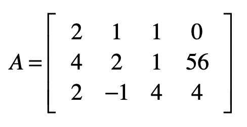
对于这个矩阵，我们的最终目标是，把除了最后一列之外的部分，变成单位矩阵，而此时最后一列中的每个值，就是每个自变量所对应的解了。
之前我已经讲过矩阵相乘在向量空间模型、PageRank算法和协同过滤推荐中的应用。这里，我们同样可以使用这种操作来进行消元。为了方便你理解，我们可以遵循之前消元的步骤一步步来看。
还记得这个方程组消元的第一步吗？对，首先保持第一个方程不变，然后消除第二个和第三个方程中的\(x\_1\)。这就意味着要把\(A\_{2,1}\)和\(A\_{3,1}\)变为\(0\)。
对于第一个方程式，如果要保持它不变，我们可以让向量\(\[1, 0, 0\]\)左乘\(A\)。对于第二个方程，具体操作是让第二个方程式减去第一个方程式的两倍，达到消除\(x\_1\)的目的。我们可以让向量\(\[-2, 1, 0\]\)左乘\(A\)。对于第三个方程式，具体操作是让第三个方程式减去第一个方程式，达到消除\(x\_1\)的目的。我们可以让向量\(\[-1, 0, 1\]\)左乘\(A\)。我们使用这三个行向量组成一个矩阵\(E1\)。
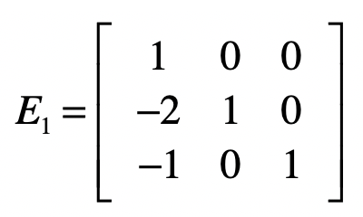
因此，我们可使用下面这个矩阵\(E1\)和\(A\)的点乘，来实现消除第二个和第三个方程式中\(x\_1\)的目的。
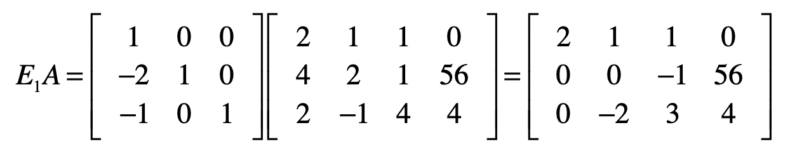
你会发现，由于使用了增广矩阵，矩阵中最右边的一列，也就是方程等号右边的数值也会随之发生改变。
下一步是消除第三个方程中的\(x\_2\)。依照之前的经验，我们要把第二个方程式作为“主元行”，来消除第三个方程中的\(x\_2\)。可是第二个方程中的\(x\_2\)已经没有了，失去了参照，这个时候我们需要把第二个方程和第三个方程互换。这种互换的操作如何使用矩阵来实现呢？其实不难，例如使用下面这个矩阵\(E2\)左乘增广矩阵\(A\)。
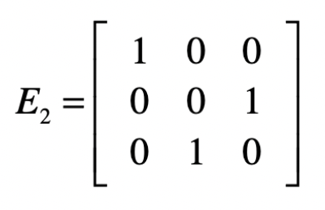
上面这个矩阵第一行\(\[1 0 0\]\)的意思就是我们只取第一行的方程，而第二行\(\[0 0 1\]\)的意思是只取第三个方程，而第三行\(\[0 1 0\]\)表示只取第二个方程。
我们先让\(E1\)左乘\(A\)，然后再让\(E2\)左乘\(E1A\)的结果，就能得到消元后的系数矩阵。
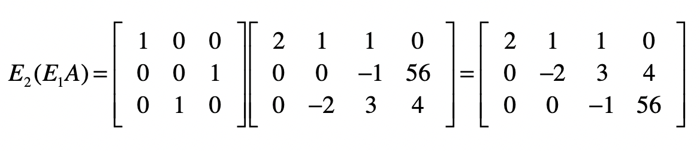
我们把\(E1\)点乘\(E2\)的结果记作\(E3\)，并把\(E3\)称为消元矩阵。
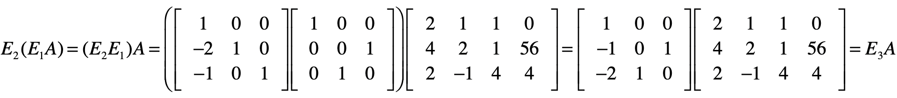

对于目前的结果矩阵来说，除了最后一列，它已经变成了一个上三角矩阵，也就是说消元步骤完成。接下来，我们要使得最后一列之外的部分变成一个单位矩阵，就能得到最终的方程组解。和消元不同的是，我们将从最后一行开始。对于最后一个方程，我们只需要把所有系数取反就行了，所以会使用下面这个矩阵\(S1\)实现。
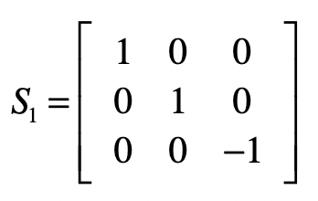

接下来要去掉第二个方程中的\(x\_3\)，我们要把第二个方程减去3倍的第三个方程，然后除以-2。首先是减去3倍的第三个方程。
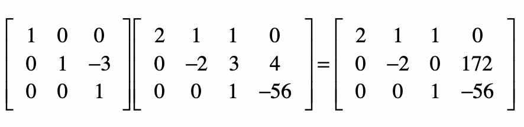
然后把第二个方程除以-2。
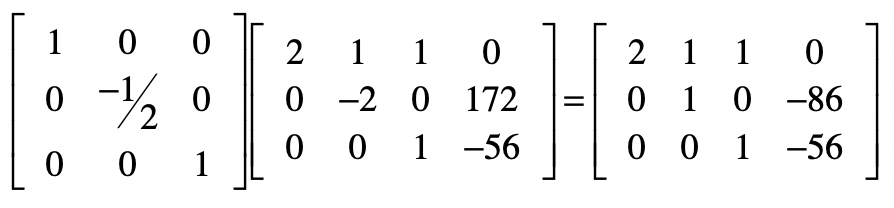
最后，对于第一个方程，我们要把第一个方程减去第二个和第三个方程，最后除以2，我把这几步合并了，并列在下方。
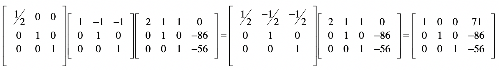
最终，结果矩阵的最后一列就是方程组的解。我们把回代部分的矩阵，都点乘起来。
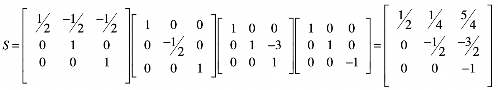
而消元矩阵\(E3\)为：
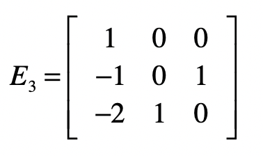
我们可以让矩阵\(S\)左乘矩阵\(E3\)，就会得到下面的结果。
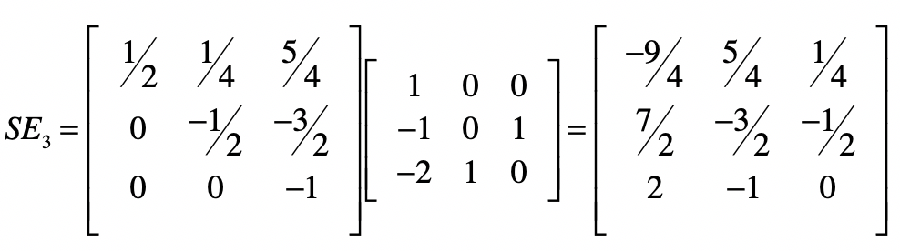
我们把这个矩阵记作\(SE\)，把乘以最初的系数矩阵\(B\)，就得到了一个单位矩阵。根据逆矩阵的定义，\(SE\)就是\(B\)的逆矩阵。换个角度来思考，使用消元法进行线性方程组求解的过程，就是在找系数矩阵的逆矩阵的过程。
总结
今天我们一起探讨了求解线性方程组最常见的方法之一，高斯消元法。这个方法主要包含了消元和回代两个步骤。这些步骤都可以使用矩阵的操作来进行。从矩阵的角度来说，消元就是把系数矩阵变为上三角矩阵，而回代是把这个上三角矩阵变为单位矩阵。我们可以直接把用于消元和回代的矩阵，用于由系数和因变量值组成的增广矩阵，并获得最终的方程解。
线性方程组的概念，也是线性回归分析的基础。在线性回归时，我们也能获得由很多观测数据值所组成的方程组。但是，在进行线性回归分析时，方程组的处理方式和普通的方程组求解有一些不同。其中有两个最主要的区别。
第一个区别是，在线性回归分析中，样本数据会告诉我们自变量和因变量的值，要求的是系数。而在线性方程组中，我们已知系数和因变量的值，要求的是自变量的值。
第二个区别是，在线性回归分析中，方程的数量要远远大于自变量的数量，而且我们不要求每个方程式都是完全成立。这里，不要求完全成立的意思是，拟合出来的因变量值可以和样本数据给定的因变量值存在差异，也就允许模型拟合存在误差。模型拟合的概念我在上一模块的总结篇中重点讲解了，所以你应该能理解，模型的拟合不可能100%完美，这和我们求解线性方程组精确解的概念是不同的。
正是因为这两点差异，我们无法直接使用消元法来求解线性回归。下一节，我会来详细解释，如何使用最小二乘法来解决线性回归的问题。
思考题
请分别写出下面这个方程组的消元矩阵和回代矩阵，并求出最终的解。
\(x\_1-2x\_2+x\_3-4x\_4=4\)- \(x\_2-x\_3+x\_4=-3\)- \(x\_1+3x\_2+x\_4=1\)- \(-7x\_2+3x\_3+x\_4=-3\)
欢迎留言和我分享，也欢迎你在留言区写下今天的学习笔记。你可以点击“请朋友读”，把今天的内容分享给你的好友，和他一起精进。
© 2019 - 2023 Liangliang Lee. Powered by gin and hexo-theme-book.